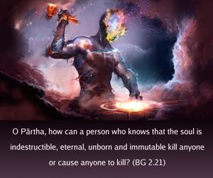

O Pārtha, how can a person who knows that the soul is indestructible, eternal, unborn and immutable kill anyone or cause anyone to kill?

Everything has its proper utility, and a man who is situated in complete knowledge knows how and where to apply a thing for its proper utility. Similarly, violence also has its utility, and how to apply violence rests with the person in knowledge. Although the justice of the peace awards capital punishment to a person condemned for murder, the justice of the peace cannot be blamed, because he orders violence to another person according to the codes of justice. In Manu-saṁhitā, the lawbook for mankind, it is supported that a murderer should be condemned to death so that in his next life he will not have to suffer for the great sin he has committed. Therefore, the king’s punishment of hanging a murderer is actually beneficial. Similarly, when Kṛṣṇa orders fighting, it must be concluded that violence is for supreme justice, and thus Arjuna should follow the instruction, knowing well that such violence, committed in the act of fighting for Kṛṣṇa, is not violence at all because, at any rate, the man, or rather the soul, cannot be killed; so for the administration of justice, so-called violence is permitted. A surgical operation is not meant to kill the patient, but to cure him. Therefore the fighting to be executed by Arjuna at the instruction of Kṛṣṇa is with full knowledge, so there is no possibility of sinful reaction.